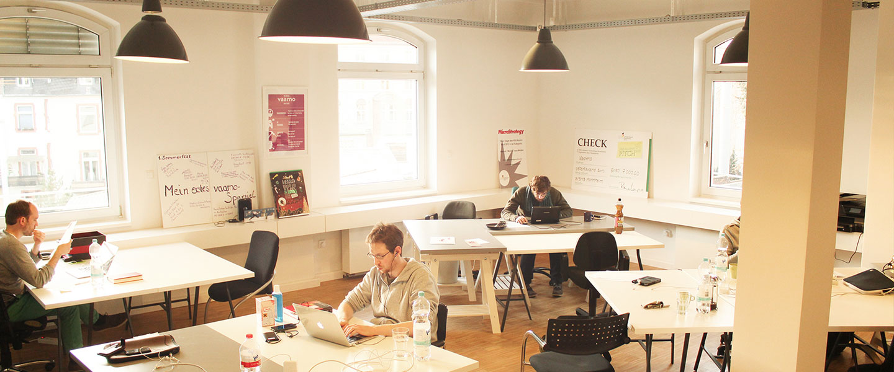
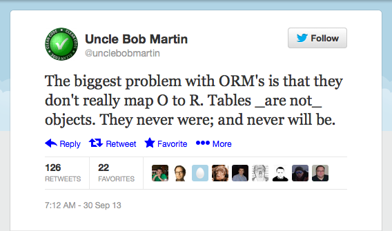
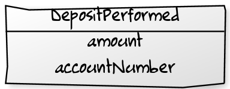

Event Sourcing
in practice
Who we are

Image © 2013 Vaamo Finanz AG. All rights reserved.
Structure
- The Object-Relational mismatch
- How does Event Sourcing work?
- Should you be doing ES?
- How we do ES
- Pitfalls we encountered
- Cool projects to watch
Getting to know you
Would you agree?
- The domain we work with requires business insight
- Our business objects match our DB Tables
- We use Hibernate (or any ORM) for O-R Mapping
- We have a sh*tload of services, mutating business objects
- We do Domain-Driven Design
The Object-Relational mismatch

Mapping O to R is suprisingly hard
- 143 pages on mapping O to R
- Recommends using ORM-Tools only for CRUD-heavy applications
- Why?
What is Event Sourcing?
- An alternate way to save data
- Mapping of objects to a stream of events, not to tables
- Thus bypasses the Object-Relational Impedence Mismatch
What is an event
- Something that happend in the past.
- E.G. 
Saving objects
case class DepositPerformed(account:UUID, amount:MonetaryAmount)
←
→
/
#